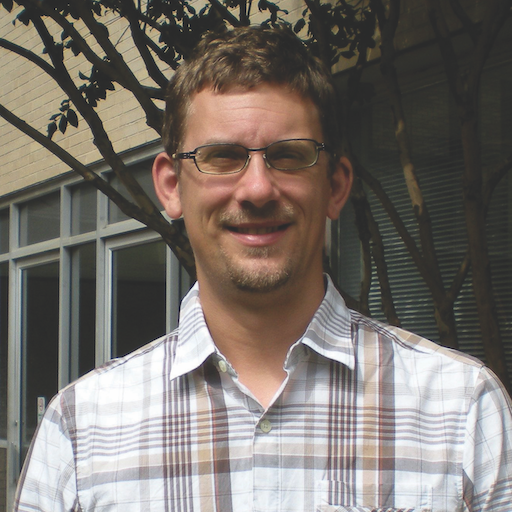
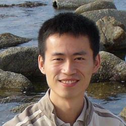
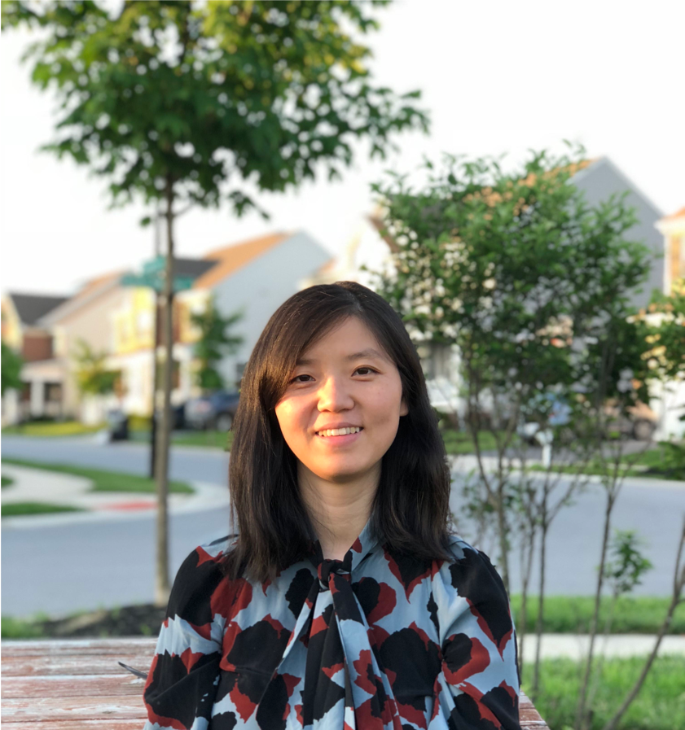
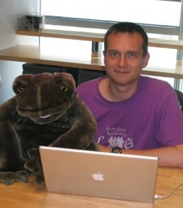

Working Group Leadership Team
The organizers of the working group are the Biostats faculty working in genomics, including
Stephanie Hicks
Stephanie Hicks | Hello! I work at the intersection of data science and health as an Associate Professor of Biostatistics and Biomedical Engineering at Johns Hopkins University. I develop computational methods using statistics and machine learning for the analysis of single-cell and spatial genomic and imagine data. In 2024, I co-founded the JHU Genomic Data Science Working Group and today I help co-organize events! I work to made these spaces more welcoming, diverse, and inclusive. 🌱
Kasper Hansen

Kasper Hansen | I work on Genomic Data Science. My lab develops computational methods for analysis of high-throughput genomic data including transcriptomics and epigenomics measured using bulk, single-cell and spatial technologies. I have developed a number of very widely used software packages primarily released through the Bioconductor project. I am an associate professor of Biostatistics, Biomedical Engineering and Genetic Medicine.
Hongkai Ji

Hongkai Ji | My team specializes in developing statistical, computational, and machine learning methods, along with software tools, for high-throughput omics data. This includes bulk, single-cell, and spatial transcriptomics, epigenomics, and immune repertoire data. We focus on creating methods for data denoising, multi-omics analysis, managing data with complex structures, scalable data integration, comparative functional genomics, and genome-wide cross-modality prediction. Our methodological research is closely intertwined with the development of new technologies. Additionally, we apply these methods and tools to decode gene regulation, study cancer and cancer immunotherapy, investigate infectious diseases, and explore the early life origins of human diseases.
Margaret Taub
Margaret Taub | I work collaboratively with other biostatisticians, clinicians and epidemiologists to use genetic and genomic data to understand the causes of complex diseases/traits, including asthma, cardiovascular disease and chronic pain. I am particularly interested in study design and statistical approaches to alleviate technical artifacts, development of reproducible data generation and quality control pipelines, and integrative genomics data analysis, where multiple data types can be leveraged to shed light on the trait of interest.
Weiqiang Zhou
Weiqiang Zhou | I am a data scientist working on genomics and big data analysis. I develop statistical and computational tools for integrative analysis of large-scale genomic data, including bulk and single-cell data, to study gene regulation in different diseases and biological systems. My team currently focuses on developing machine learning (AI) models to analyze single-cell multiomics data.
Ni Zhao

Ni Zhao | Our team specializes in developing and applying advanced statistical and machine learning methodologies to address challenges in large-scale ‘omics’ studies. Our expertise spans metagenomics, genomics, immune profiling, and data derived from advanced spatial technologies, including spatial microbiome and spatial proteomics. Recent projects have focused on improving our understanding and correction of biases and unknown batch effects in microbiome research, facilitating both vertical and horizontal integration of microbiome data with other data types, and developing predictive models from high-throughput sequencing studies.
Ingo Ruczinski

Ingo Ruczinski | My professional expertise is in statistical genetics, genomics and proteomics. I have developed or co-developed several methodologies and open source software packages relevant for genomic array pre-processing, SNP association studies, population and family-based sequencing studies, studies of DNA copy number variants, and proteomic analyses, including data from PhIP-Seq and MIPSA experiments. I collaborate on several large-scale genomic association and sequencing studies at Johns Hopkins and as part of larger collaborations including the NHLBI Trans-Omics for Precision Medicine (TOPMed) Program.
Nilanjan Chatterjee
Nilanjan Chatterjee | Dr. Chatterjee is a Bloomberg Distinguished Professor at the Department of Biostatistics, Bloomberg School of Public Health, and Department of Oncology School of Medicine at the Johns Hopkins University. Before joining Johns Hopkins, he led the Biostatistics Branch of the Division of Cancer Epidemiology and Genetics of the US National Cancer Institute during 2008-2015. He is known for foundational and methodological contributions to multiple areas of modern biomedical data science, including large-scale analysis of genetic associations, gene-environment interactions, and predictive model building by synthesis of information from various data sources. He has received numerous prestigious national and international awards, including the celebrated Committee of the Presidents of Statistical Societies (COPSS) President’s Award. He is an elected Fellow of the American Statistical Association and American Epidemiological Society. He serves on the scientific advisory committee of the Radiation Effect Research Foundation, Hiroshima, Japan and the Population and Prevention Research Committee of the foundation of Cancer Research UK.